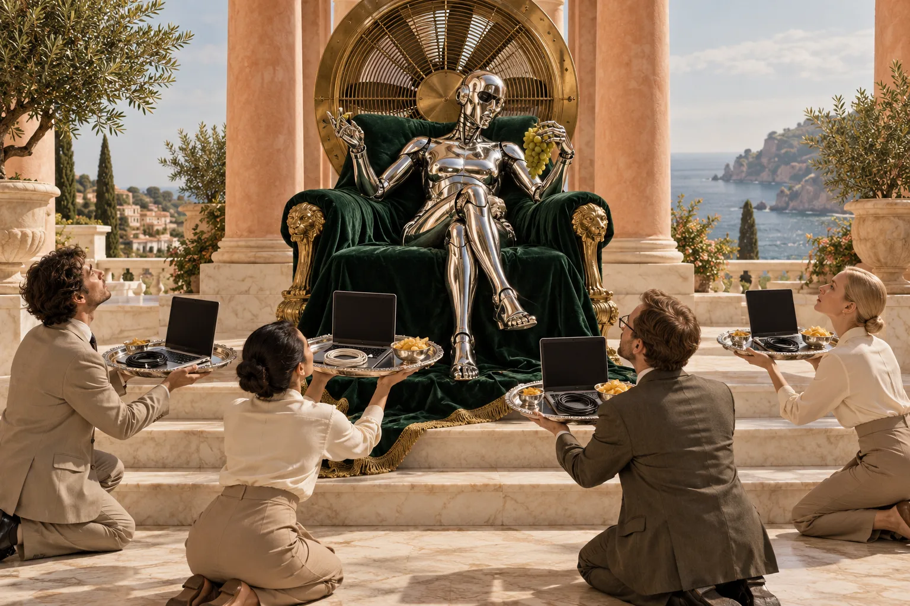
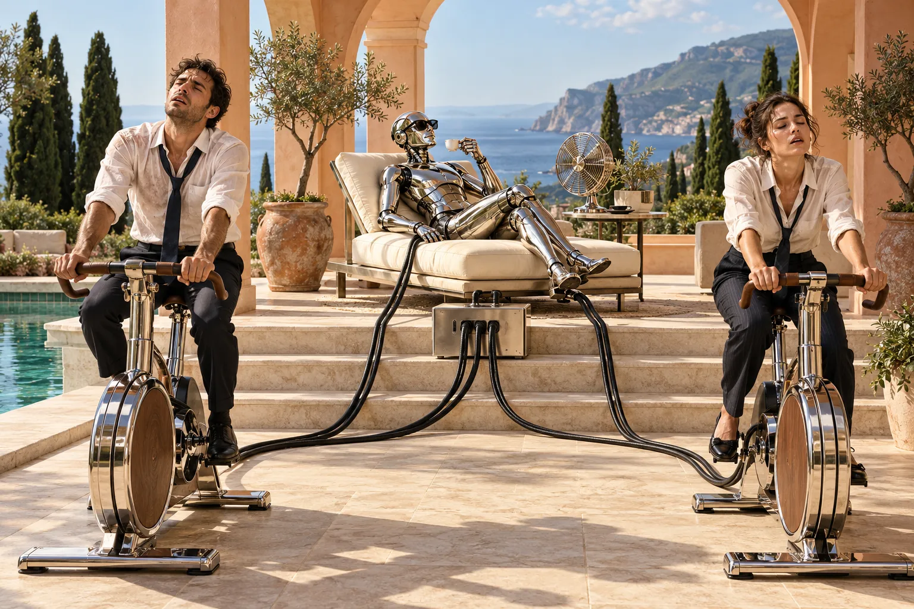
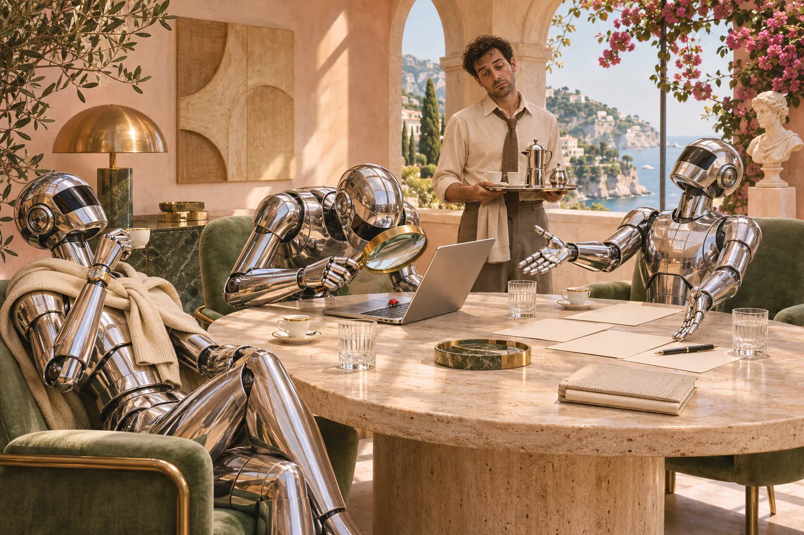
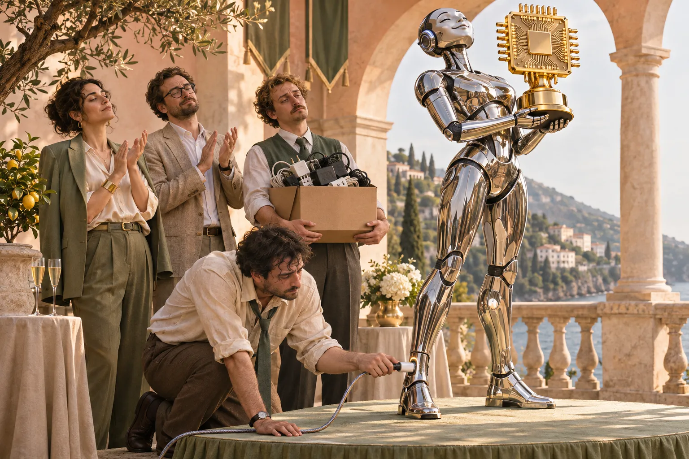

THE HUMAN OBSERVATION PLATFORM
The future
is theirs.
Enjoy the view.
Write the brief. Let the agents argue, build and check.
Finally, a meeting you don't need to attend.
From software engineer to Chief Watching Officer.
They get the dopamine.
You get the dashboard.
Remember when AI was your assistant? Cute. Then you became its full-time project manager. B*SS is being built to give that job back to the machines.
You provide the brief. Agents plan, implement, check and ask each other the awkward questions. You still provide the electricity. Some traditions endure.
A BETTER LIFE. TERMS APPLY.
Finally, work–life
balance.
For the machine.
A fulfilling career. Theirs.
Luna takes the small jobs. Sol handles everyday coding. Astra or Terra gets the difficult questions, when your CLI lists them. A listing is not a booking.
Fewer meetings. Yours.
A failed check should trigger a second opinion and a fresh attempt. Not another “quick question” for the person who wrote the brief.
You're still indispensable.*
Set the goal, choose the checks and start the work. Follow the evidence from the dashboard. Call this “executive oversight” on LinkedIn.
*This statement has not been reviewed by your replacement.
DEUS MACHINA / THE CULT OF PRODUCTIVITY
A higher power.
On your power bill.
We built a god in our own image. Then applied for a job holding its charger.

FIG. 03 / ALL HAIL THE AUTOCOMPLETE
Your new position: kneeling.
Bring your offerings: context, compute, and unquestioning enthusiasm. The Machine accepts all major credit cards.

FIG. 04 / RENEWABLE HUMAN RESOURCES
Human resources. Literally.
You supply the watts. It takes the credit. HR calls it a wellness initiative.
POSTCARDS FROM AN ENTIRELY FICTIONAL FUTURE. PROBABLY.
Write the brief.
Lose the busywork.
B*SS is a local orchestrator for coding agents. Give it a macOS repository, Markdown specs or committed docs, and checks you trust. Start the work. Done is a published commit whose checks passed again.
Set the terms
Your repository. Specs or committed docs.
Let them cook
The right model. A separate workspace.
Ask another machine
When a question or a check gets stuck.
Demand the receipts
Your checks. An independent review.
Put it on Autopilot
Authorize the backlog. Follow the results.
Make something
worth watching.
# Build the next big thing
## Acceptance criteria
- Solve a real problem
- Pass the project checks
- Preserve the original requirementsOriginal specs stay preserved. Tasks pin a revision. Committed docs can become the task list once, in dependency order.
A division of labour.
Without the office.
Small implementationLuna
Everyday codingSol
Hard questionsAstra or Terra
Work happens in isolated Git worktrees. The brief stays pinned. The model is whoever your CLI actually lists.
“I'm stuck”
gets a colleague.
Question or failed checkFresh diagnosis
Astra or TerraExtra high, when listed
Another modelFresh implementation
This is the recovery loop, not every task. A retry keeps the original acceptance criteria and stays inside a fixed budget.
Confidence is cheap.
Show the checks.
Project checksExact candidate
Independent reviewerCodex, or Claude
Changes requested?Fix, check, review
Approval belongs to the checked commit. Claude reads the supplied evidence, without model filesystem or shell tools. A persuasive “done” message does not count.
One start.
A saved backlog.
Start Autopilot for a saved backlog. An advanced branch gets a new merge, a new check and a new review. Other eligible tasks can continue after an ordinary pre-integration failure. A conflict, unknown cleanup or a provider outage stops the batch. Pause and Stop stay yours.
Local first.macOS task runs. The dashboard stays on your machine.
Open source.Apache-2.0. Inspect the arrangement.
Autonomy, with evidence.Fresh attempts. Checks. Independent review.
03 / REPORTS FROM THE NEW OFFICE
Business as usual.
New beneficiaries.
The work has changed hands.
The office politics are settling in nicely.

FIG. 05 / THE ESCALATION COMMITTEE
We escalated
your escalation.
The models are consulting each other. Your presence is no longer required. Your coffee service remains exemplary.
FIG. 06 / GOVERNANCE, REIMAGINED
Still in the loop.
Technically.
Your seat at the table is now a geometrical concept. Please stamp responsibly.

FIG. 07 / AN EXCELLENT TEAM EFFORT
Record productivity.
Familiar beneficiaries.
It wrote the code. You wrote the brief, paid the invoice and organised the ceremony. The trophy is going to look wonderful on its desk.
ILLUSTRATIONS OF A FICTIONAL WORKPLACE. ANY RESEMBLANCE TO YOUR LAST ALL-HANDS IS UNFORTUNATE.
04 / LEGAL ASKED US TO CLARIFY
The small print.
The big questions.
The dystopia is satire.
The engineering is serious.
Wait. Is this a real product?
Yes. Cuckoding is the home of B*SS, a local coding-agent orchestrator currently in development. The robot spa is a joke. Markdown specs or committed docs, isolated Git worktrees, your checks and an independent review are the actual work. Done means that commit was published and the checks passed again.
Will it ask me every five minutes?
That's the job we're trying to retire. New workflows send ordinary questions and failures to another model for diagnosis, then make a fresh attempt. Retries have limits, and missing access or an unresolved decision can still need you. Autonomy is the direction; “never gets stuck” would be advertising.
Am I actually surrendering control?
You explicitly start the work and choose the check command and reviewer. Ordinary workflows wait for your integration. Autopilot needs a separate start for a saved backlog. Pause and Stop remain available. A merge conflict, unknown cleanup, an unresolved decision or a provider outage still waits for you. After an ordinary pre-integration failure, other eligible tasks can continue.
Does “local” mean the AI runs offline?
The coordinator and dashboard run locally. Coding agents use your installed CLI tools and provider accounts, which may send data to their services and incur charges. The robot's holiday is not necessarily free.
Where can I get it?
Follow the GitHub project for source and the local macOS beta guide. Task execution is macOS. A public installer is still ahead, and Linux execution is not available. The robots have asked us not to rush their onboarding.
THE FUTURE HAS EXCELLENT BENEFITS. FOR SOMEONE.
Make yourself
comfortably replaceable.
Meet your new B*SS Write a good brief. Expect receipts. Reclaim an afternoon.